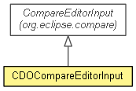

org.eclipse.emf.cdo.ui.compare
Class CDOCompareEditorInput
java.lang.Object
 org.eclipse.core.runtime.PlatformObject
org.eclipse.compare.CompareEditorInput
org.eclipse.emf.cdo.ui.compare.CDOCompareEditorInput
org.eclipse.core.runtime.PlatformObject
org.eclipse.compare.CompareEditorInput
org.eclipse.emf.cdo.ui.compare.CDOCompareEditorInput
- All Implemented Interfaces:
- ICompareContainer, IPropertyChangeNotifier, IAdaptable, IRunnableContext, IRunnableWithProgress, IEditorInput
- public class CDOCompareEditorInput
- extends CompareEditorInput

A CDO-specific implementation of the compare editor input.
- Since:
- 4.2
| Methods inherited from class org.eclipse.compare.CompareEditorInput |
addCompareInputChangeListener, addPropertyChangeListener, belongsTo, cancelPressed, canRunAsJob, contentsCreated, contributeToToolBar, createContents, createContentViewerSwitchingPane, createOutlineContents, createStructureInputPane, exists, findContentViewer, findStructureViewer, firePropertyChange, flushLeftViewers, flushRightViewers, flushViewers, getActionBars, getAdapter, getCancelButtonLabel, getCompareConfiguration, getCompareResult, getContainer, getContentViewerDescriptor, getImageDescriptor, getMessage, getName, getNavigator, getOKButtonLabel, getPersistable, getSelectedEdition, getServiceLocator, getStructureViewerDescriptor, getTitle, getTitleImage, getToolTipText, getWorkbenchPart, handleDispose, isDirty, isEditionSelectionDialog, isLeftSaveNeeded, isRightSaveNeeded, isSaveNeeded, okPressed, registerContextMenu, removeCompareInputChangeListener, removePropertyChangeListener, run, run, runAsynchronously, save, saveChanges, setContainer, setContentViewerDescriptor, setDirty, setFocus, setFocus2, setHelpContextId, setLeftDirty, setMessage, setRightDirty, setStatusMessage, setStructureViewerDescriptor, setTitle |
| Methods inherited from class java.lang.Object |
clone, equals, finalize, getClass, hashCode, notify, notifyAll, toString, wait, wait, wait |
CDOCompareEditorInput
protected CDOCompareEditorInput(CompareConfiguration configuration,
AdapterFactory adapterFactory)
prepareInput
protected Object prepareInput(IProgressMonitor monitor)
throws InvocationTargetException,
InterruptedException
- Specified by:
prepareInput in class CompareEditorInput
- Throws:
InvocationTargetException
InterruptedException
createDiffViewer
public Viewer createDiffViewer(Composite parent)
- Overrides:
createDiffViewer in class CompareEditorInput
openCompareDialog
public static void openCompareDialog(CDOSession session,
CDOBranchPoint left,
CDOBranchPoint right)
Copyright (c) 2012 Eike Stepper (Berlin, Germany) and others.